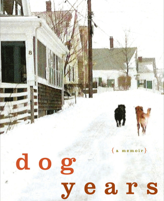
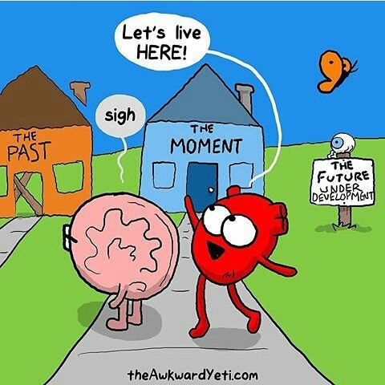

經過了
飛行了 9704 公里
.
.
.
.
.
.
.
.
.
.
.
.
你回來了
有開心嗎
還是有點不捨勒
幫你回顧一下

這一年你似乎遇上了許多麻煩
等了很久的工作證
租到了沒有wifi的房子
幫人按摩維生按到手抽筋
自己煮飯
每天掉頭皮屑
碰到宵禁
碰到過恐怖攻擊
手機壞掉
按時當親戚朋友的導遊
看電影買到0趴啤酒
看似不輕鬆的日子
透過社群媒體就變成了一種體驗
早上上班
有時會看到你的新照片
配著早餐 看照片 想像你的生活
你的夢想由真實的人事物構成
就像你硬碟裡的許多照片 你希望有個完美的人生
我不知道你未來的人生裡 會不會有我的存在
我知道你不會想太多 因為你總是順著自己的心 是活在當下的人
所以
我替你想好了
透過一些測驗 了解我們
你準備好了嗎